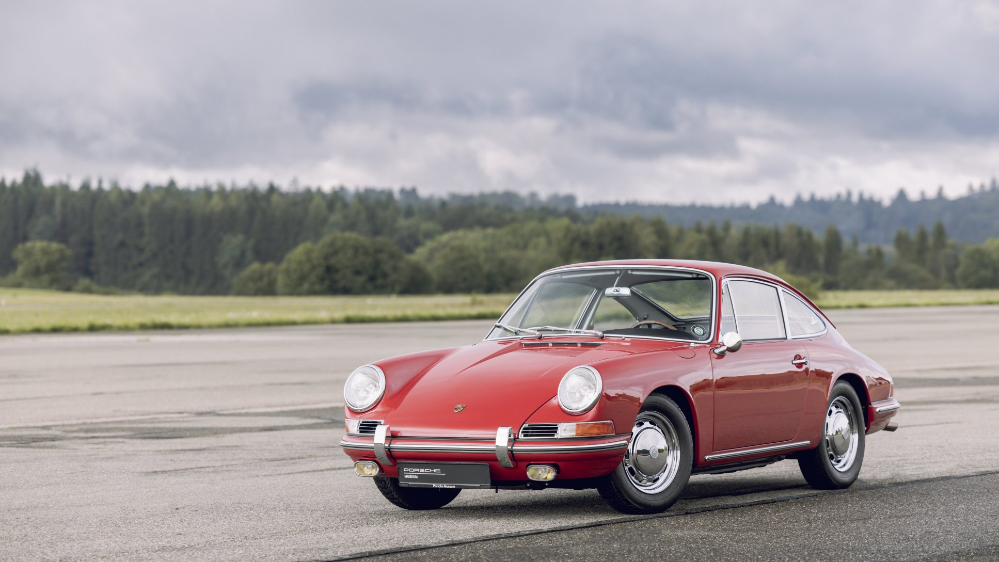
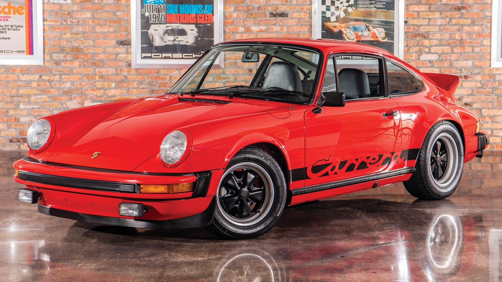
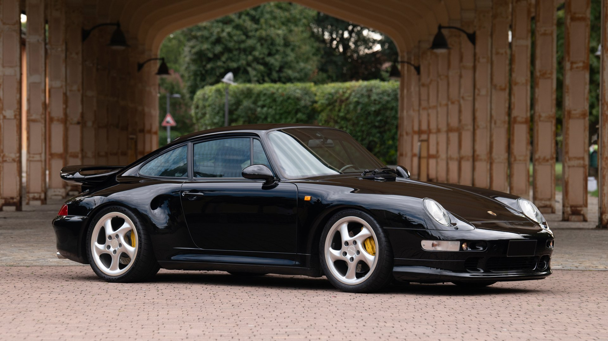
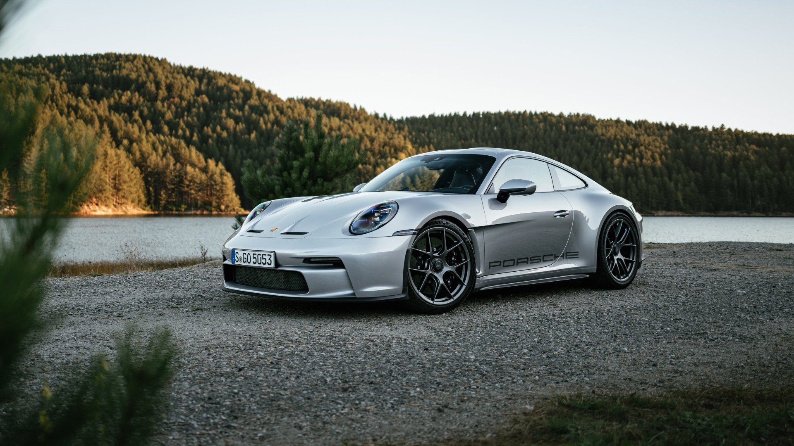

História Legendy
Cesta od roku 1963 po súčasnosť
1963
Zrodenie ikony (Original 911)
Prvé Porsche 911 bolo predstavené na autosalóne vo Frankfurte ako nástupca modelu 356. Pôvodne sa volalo 901, ale kvôli sporu s Peugeotom sa číslo zmenilo na legendárnych 911.
1974
Éra Turbo (G-Series)
Príchod prvého 911 Turbo (Type 930) zmenil svet športových áut. Širšia karoséria a obrovské zadné krídlo "Whale Tail" sa stali symbolom výkonu.
1998
Revolúcia (Type 996)
Koniec éry vzduchom chladených motorov. Model 996 priniesol vodné chladenie a úplne nový dizajn karosérie, čo vyvolalo kontroverzie, ale zachránilo značku.
2024
Dokonalosť (Type 992)
Súčasná generácia kombinuje digitálny interiér s brutálnym analógovým výkonom. Je širšia, rýchlejšia a technicky vyspelejšia ako kedykoľvek predtým.
